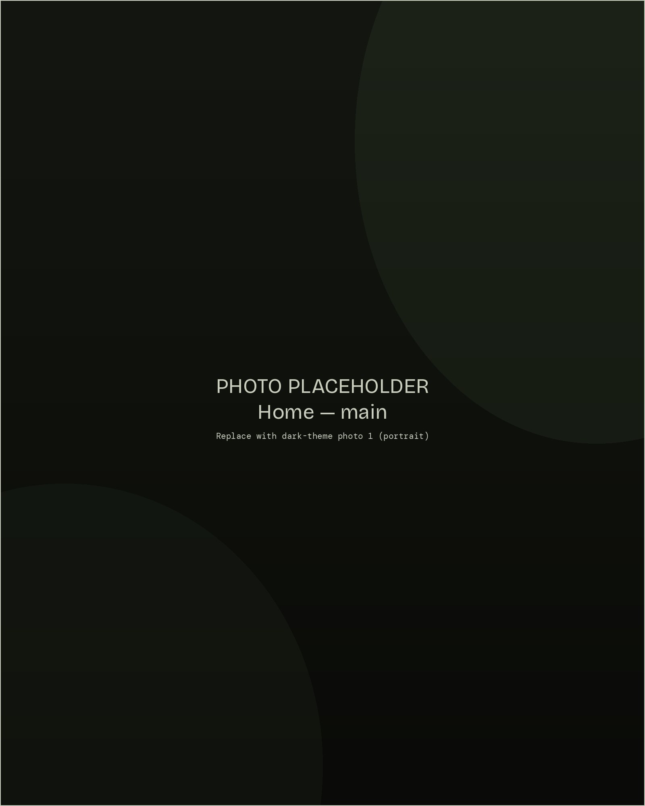
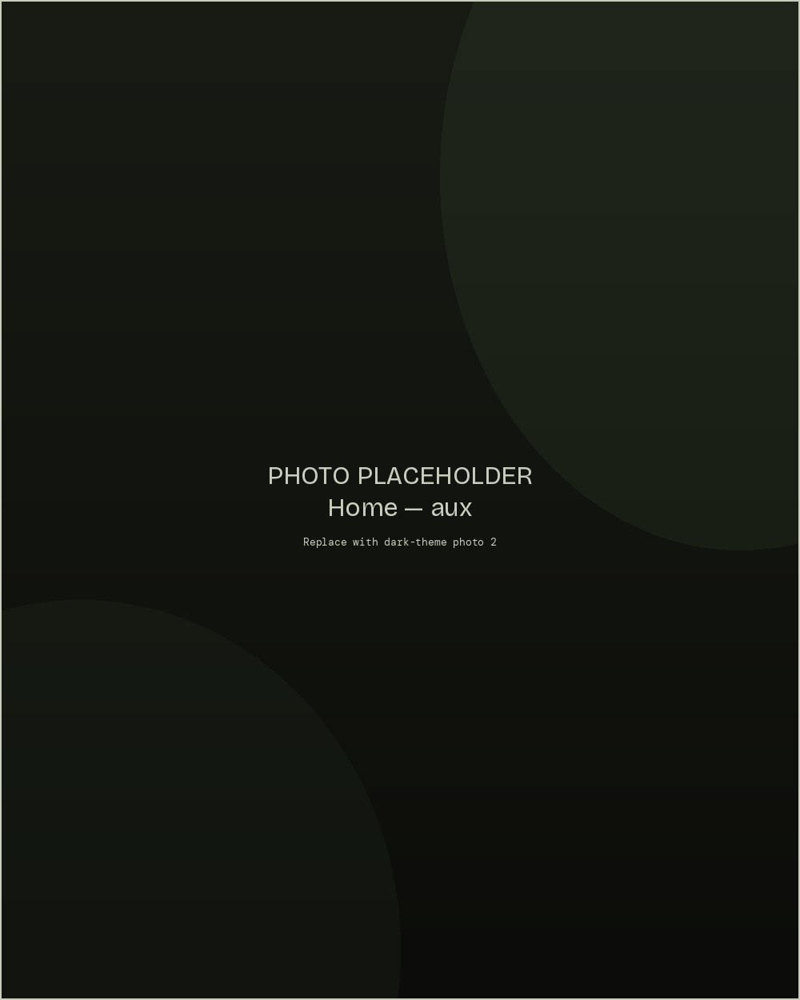

Atmospheric songs built in the space between quiet and loud.
Jonah Cullen is a songwriter and producer working at the edge of rock, ambient texture, and quiet devastation. After a decade fronting LUX, he stepped out under his own name with Within — a record about what's left when the noise clears.
Based in [your city]. Available for collaborations, sync licensing, and shows.
Read more